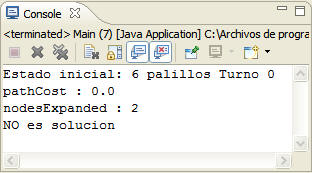

| Palillos |
Disponemos de 6 palillos y 2 adversarios. El juego consiste en ir retirando en cada turno 1 o 2 palillos del montón, y ganará el adversario que consiga quitar todos los palillos. En esta implementación se añade la condición de que gané el jugador inicial o Jugador 0. Estando en posesión de estos datos resulta natural asumir que los estados se representan mediante una pareja de datos, siendo cada uno de los datos descritos ( número de palillos y jugador0 o jugador1)
Se aplica un algoritmo no informado o ciego, aunque el juego está preparado para realizar búsquedas informadas, ya que esta en dominio de una función heurística, que tiene en cuenta la condición añadida del juego (Gana el jugador 0) h'(n) = Número de palillos restantes, si el jugador es el 0. h'(n) = Número de palillos restantes + 1, si el jugador es el 1.
Algoritmo IterativeDeepeningSearch o Profundidad Iterativa: Combina los algoritmos de Primero en Anchura y Primero en Profundidad, donde la profundidad se desconoce, ya que ésta varía de forma creciente. Teniendo conocimiento de que cada uno de los juegos realiza una acción de nave hostil en el universo donde se ejecutan, resulta lógico que en algunos casos dichas naves hostiles (juegos) impidan el paso por ciertos caminos (enlaces imposibles debido al resultado negativo del juego, solución inexistente) por lo que, aunque existen soluciones para este juego, mediante diferentes algoritmos de búsqueda (algoritmo voraz, utilizando así la función heurística) se ejecuta un algoritmo que por sus características es incapaz de hallar una solución. 
Estado ( Palillos restantes, Jugador ) Estados
prohibidos: Estos estados prohibidos se
generan debido a las especificaciones añadidas al juego (Gana el
jugador inicial y éste es el Jugador 0) Estado inicial: Estado final: |